The due date for this homework is Thursday, March 31st, 5:00pm.
This homework will improve your skills with nested for loops, functions and modules by having you develop programs that use nested loops to repeat code patterns that are similar but not exactly the same. Your program will uses the cImage module, described in the textbook. Specifically, this assignment is designed to give you practice with the following topics:
To get started, download hw6.zip and unzip the compressed file to reveal the following files:
hw6_images.py this file will be used for all of your codecImage.py an image manipulation module described in the textbook and used by your programimg a folder of images you can use to test your hw6_images.py programhw6.pdf this descriptionNote that all starter files have special headers at the top including form fields that you should fill out before submitting your assignment. Also, do not change the file names as the test program included with this homework (and test programs that we use) assume certain file names.
Open and attempt to run the hw6_images.py file. Note that the cImage.py module described in the textbook has been included in the zip file for this homework; the hw6_images.py file uses this module to manipulate and display the images. Note that to close the image window, you can just click anywhere on it.
You will write all of your code for this part of the homework in the hw6_images.py file. Carefully read through all of the comments in the file to make sure you understand what sections of the file you do not need to modify and where your code should go.
We have provided four image file examples that you can work with for this assignment: house.gif, colgate.gif, rose.gif, and grid.gif. It is strongly recommended that you test your code with multiple images to help ensure that it works for any image. Some code has been added to the main function that will call the various functions you need to write; you are welcome to modify the code in main as you run and test your code.
Note: When the main function runs, it will display each image result in sequence. To see the next image, click on the current image. Do not click not on the X in the corner of the image window).
You will write eight functions that take an image object, create a copy, perform a pixel-by-pixel manipulation, and return the manipulated copy. We have provided three helper functions (open_image, display_image, and save_image) that you can use to test your code. You may write any additional helper functions that you find useful. Below there are descriptions and sample images for each of the required manipulations.
The best way to test your image functions is to modify the main function at the bottom of hw6_images.py. You can add calls to the various image functions and use the helper functions to display and save the new/modified image.
The code for an example function, red_filter, is provided in hw6_images.py; images to show the effect of this filter are shown below.
 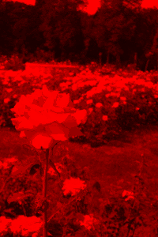
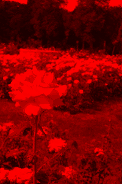 
The eight functions you must write are as follows:
flip_horizontal“Flip” the image horizontally so that pixels on the left column and right column are swapped, pixels on the second column and next-to-last column are swapped, etc


flip_vertical“Flip” the image vertically so that pixels on the top row and bottom row are swapped, pixels on the second row and the next-to-last row are swapped, etc


 –>
–>
rotate_clockwise“Rotate” the image 90 degrees clockwise so that the left edge of the original image becomes the top of the rotated image.
 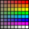
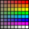
to_negativeConvert the image to its negative. The RGB components of each pixel in the negative image should be 255 minus the corresponding component of the same pixel in the original image.


to_grayscaleConvert each pixel to grayscale. A pixel will be gray if each of the RGB components are equivalent. You should take the average of the three color components for each pixel, and then set each color component to the computed average value in order to obtain an appropriate grayscale pixel.
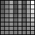
scale_upCreate a new image in which each dimension has been doubled. Note that each pixel in the old image will map to four pixels in the new image (draw this if that’s not clear). Each of the four pixels in the new image should have the same color as the pixel from the original image.
 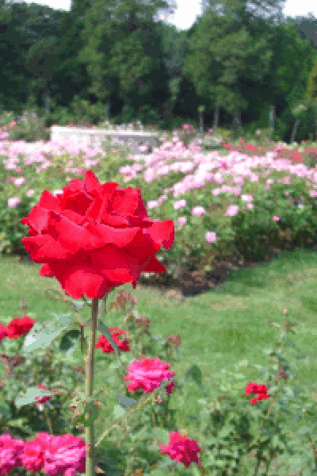 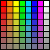
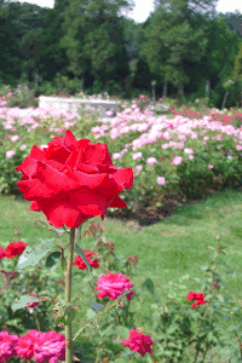 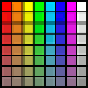
scale_downCreate a new image in which each dimension in the new image is cut in half. To do this, scale each block of four pixels in the old image down to one pixel in the new image (again, draw this out if that’s not clear). The RGB components of the resulting (new) pixel should be computed using the average of the corresponding components from the four original pixels.
Note that you’ll need to be careful about images that have an odd number of rows and/or columns: for those images, you should use as many pixels as possible to compute the averaging (it may only be 2 pixels, or in the worst case just 1).

leave_colorConvert all non-red pixels to grayscale. A pixel is considered red if its red channel is more than 125 and its green and blue channels are each less than 125. To convert a pixel to grayscale, set its red, blue, and green channels to the average of these channels in the original pixel.
 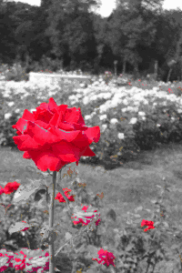
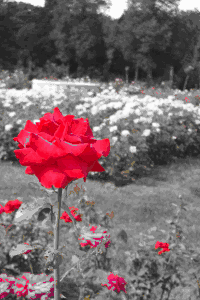 
Challenge problems are entirely optional extensions to the homework. If you complete them successfully, you are rewarded with a sense of accomplishment and a small number of extra points on the homework. They are intended for students who want to explore a little further; only pursue the challenge problem after you have successfully completed the homework.
For this week, the challenge problem is to create your own image manipulation. For inspiration, you can investigate different filters and manipulations in apps or programs that modify photos. You can also create a new image by combining the various functions you’ve written for image manipulation.
Here are some specific ideas you could consider:
If you choose to do the challenge problem, please write your additional function in the file hw6_images.py. The function should be called challenge. Be sure to explain what your function does in the docstring! Have fun!
Please upload only your hw6_images.py file. Remember to complete the questions at the top of the file and that the file you submit must have this exact filename.
Your assignment will be graded on two criteria:
Correctness: Be sure that you run your programs and make sure they work correctly. Be sure to test more than one image to verify that the image transformation works for other inputs, too — you can be sure that we will do that! [80%]
Program design and style [20%]: style and program design become increasingly important the more complex your program becomes. For these programs, adhere to the following guidelines:
Variable names should be meaningful
Programs should contain at least a few descriptive comments. Do not comment every line of code with low level explanations of what each line does. Focus on high level ideas.
Any functions must have appropriate docstrings